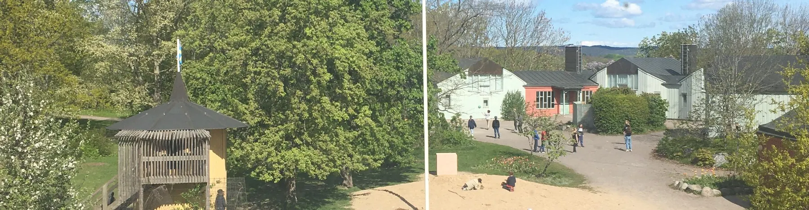
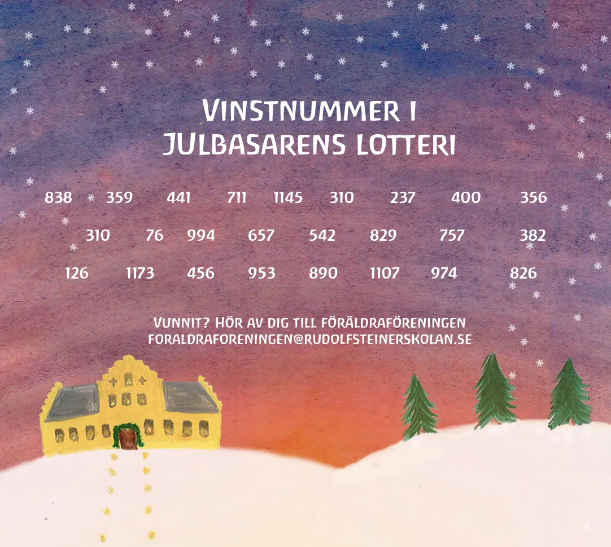

Föräldraföreningens styrelse
Ordförande
Damien Blanchard
Kassör
Sara Kornfeldt
Ledamöter
Karin Anér
Paula Villamil Munoz
Jenny Skillingdal Leffing
Eva Ekström

Alla föräldrar på ”kullen” är automatiskt med i Föräldraföreningen. Föräldraföreningen består av alla föräldrar till barn på Rudolf Steinerskolan, Äppelblomman och Ståthögaskolan. I varje klass/grupp väljs två klass- föräldrar som träffas på klassföräldramöten ett par ggr/termin. Alla föräldrar är hjärtligt välkomna att delta i vår verksamhet.
Föräldraföreningens uppgift är att bidra till att skapa en god och trivsam miljö på skolan. Det innebär att ni som föräldrar ska känna att det är viktigt och självklart att delta i det utvecklingsarbete som sker och i alla verksamheter som föreningen ansvarar för.
Som föräldraförening organiserar vi tillsammans julbasar, skördefest, städning, arbetshelger och stormöten mm.
Föräldraföreningens styrelse hanterar intäkterna från julbasaren och skördefesten. Dessa pengar går främst till sådant som rör barnens miljö och trivsel på skolan men kan även användas till bidrag till klassresor, föreläsningar, skolbesök etc.
För att ansöka om hjälp eller stöd till aktivitet projekt mm så är det viktigt att man använder följande blankett:
20191006 Blankett ansöka medel FF
Om ni vill att styrelsen deltar på era klassmöten för att informera om vår verksamhet så kontakta oss via E-mail.
För att kontakta föräldraföreningen maila till foraldraforeningen@rudolfsteinerskolan.se.
Föräldraföreningens postgiro: 643 71 19-8

Tack alla som hjälpte till och till de besökare som kom till årets julbasar! Här nedan syns dragningen på presentkorgslotteriet 2023.
För att hämta vinster kontakta föräldraföreningen: foraldraforeningen@rudolfsteinerskolan.se
Ordförande
Damien Blanchard
Kassör
Sara Kornfeldt
Ledamöter
Karin Anér
Paula Villamil Munoz
Jenny Skillingdal Leffing
Eva Ekström
foraldraforeningen@rudolfsteinerskolan.se"> foraldraforeningen@rudolfsteinerskolan.se
Följ oss på instagram: